Sage est une des Agents de base de Valorant. C’est une Sentinelle qui ne brille pas particulièrement au combat, mais dont les capacités de soutien la rendent très facilement indispensable dans n’importe quelle composition d’équipe. Sage est le seul Agent capable de soigner ses alliés, voire de les ramener à la vie. C’est pourquoi il vaut mieux la jouer en dernière ligne.
- Orbe de Lenteur est un sort qui coûte 200 crédits. Vous pouvez en acheter deux par rounds. Comme son nom l’indique, cette orbe ralentit les ennemis. Lorsque vous l’envoyez et qu’elle touche une surface horizontale (et seulement horizontale, elle ne se déclenche pas contre un mur), elle éclate et déploie une flaque sur le sol d’une matière ressemblant à du cristal. Toute personne qui marche dedans subit donc un ralentissement et va produire un bruit facilement identifiable par les autres joueurs.
- Orbe Barrière coûte 400 crédits et ne peut être acheté qu’une seule fois par round, vous allez donc devoir faire preuve de prudence sur son utilisation. Lorsque vous l’activez, vous créez un mur de glace divisé en quatre blocs. Ce mur ne peut pas être traversé et il n’est pas non plus possible de voir à travers car il est complètement opaque. Vous pouvez choisir son orientation avec le clic droit de votre souris, et le poser avec le clic gauche.
-  Orbe de Soin est la compétence signature de Sage. Une fois utilisée, elle met 45 secondes avant d’être à nouveau disponible. Ses utilisations étant donc limitées, on préférera bien entendu les utiliser le plus tard possible. Ne soignez pas un allié qui a encore plus de 80 points de vie, ça n’en vaut généralement pas la peine. N’attendez pas trop longtemps non plus ou il sera trop tard. Dans l’idéal, on aimerait soigner un allié dès qu’il a moins de 40 points de vie. Il retrouvera alors toute sa vie.
- Comme son nom l’indique, la compétence Ultime de Sage permet de ramener à la vie un coéquipier mort au cours du round. C’est une compétence qui peut devenir décisive au cours d’un round, mais qu’il est très facile de mal utiliser. Il y a deux pièges à éviter.
 Tour de Force est l’ultime de Chamber. Il lui procure gratuitement
un sniper qui permet de tuer un ennemi d’une seule balle, peu
importe l’endroit touché. Il vous suffit donc de toucher votre
adversaire avec cette arme, même dans ses pieds, pour mettre fin à
ses jours. Lorsque vous tuez un adversaire, la compétence déploie
une zone sous les pieds de la victime. Celle-ci les ralentit et
les empêche de sauter, à l’instar de Marque déposée. Lors d’un
push, si Chamber tue le premier joueur à passer une porte, cette
zone va permettre de dissuader le reste des adversaires d’avancer.
Il peut en revanche être aussi intéressant de laisser plusieurs
ennemis s’avancer avant de prendre le premier kill.
Tour de Force est l’ultime de Chamber. Il lui procure gratuitement
un sniper qui permet de tuer un ennemi d’une seule balle, peu
importe l’endroit touché. Il vous suffit donc de toucher votre
adversaire avec cette arme, même dans ses pieds, pour mettre fin à
ses jours. Lorsque vous tuez un adversaire, la compétence déploie
une zone sous les pieds de la victime. Celle-ci les ralentit et
les empêche de sauter, à l’instar de Marque déposée. Lors d’un
push, si Chamber tue le premier joueur à passer une porte, cette
zone va permettre de dissuader le reste des adversaires d’avancer.
Il peut en revanche être aussi intéressant de laisser plusieurs
ennemis s’avancer avant de prendre le premier kill.